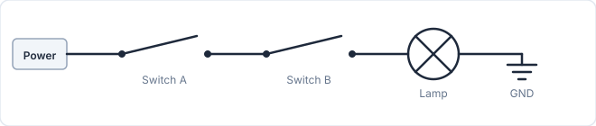
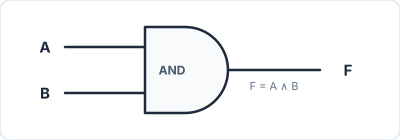
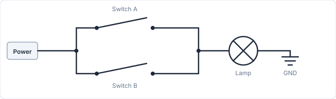
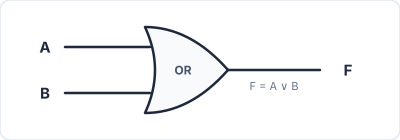
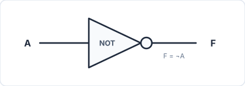

Logic Gates
Getting Started
For this lab, we will use logic.ly - a simulator that lets you build logic circuits by drag-and-drop in a web browser.
1. Boole and Shannon
George Boole (1815–1864)
Boolean algebra is a mathematical system that treats true/false as 0 and 1, and logical connectives as operations on 0 and 1. The operators \(\land\), \(\lor\), and \(\neg\) we use in class are the fundamental operations of this system.
Claude Shannon (1916–2001)
In 1937, MIT graduate student Claude Shannon showed in his master's thesis A Symbolic Analysis of Relay and Switching Circuits that the logical operations of Boolean algebra correspond exactly to electrical switching circuits.
A logic gate is not just a truth table in the mind - it is a physical circuit implemented with real electronic components. Early gates used relays (electrically operated automatic switches); after the invention of the transistor in 1947, transistors took over; today they are integrated by the billions inside IC chips.
2. Logical Operations and Logic Circuits
Shannon's core insight is that the \(\land\), \(\lor\), and \(\neg\) operations can be physically implemented using nothing more than wires and switches. AND is series, OR is parallel, NOT is inversion.
| Logical operation | Logic gate | Switch circuit |
|---|---|---|
| \(\neg p\) | NOT | State inversion |
| \(p \land q\) | AND | Switches in series |
| \(p \lor q\) | OR | Switches in parallel |
AND
Thinking of AND as switches in series: current flows - and the lamp turns on - only when both switch A and switch B are closed. This behavior matches the truth table of \(A \land B\) exactly.

When designing logic circuits, the AND gate is represented by the D-shaped symbol below.

Exercise
- (1) Build a circuit using an AND gate that takes two inputs and produces one output.
OR
Thinking of OR as switches in parallel: current flows as long as at least one switch is closed. The logical expression is \(A \lor B\).

When designing logic circuits, the OR gate is represented by the arrow-head-shaped symbol below.

Exercise
- (1) Build a circuit using an OR gate that takes two inputs and produces one output.
NOT
NOT inverts the state of a switch. A relay - an electrically controlled automatic switch - can reverse its open/closed state. In logic circuit diagrams, NOT is represented as a triangle with a small circle (bubble) at its output.

Exercise
- (1) Build a circuit using a NOT gate that takes one input and produces one output.
3. Logic Gates
A logic gate is an electronic circuit that implements a logical operator. In addition to AND, OR, and NOT, the following gates are commonly used.
| Expression | Gate name | Meaning |
|---|---|---|
| \(\neg(p \land q)\) | NAND | Negation of AND - 1 if any input is 0 |
| \(\neg(p \lor q)\) | NOR | Negation of OR - 1 only when both inputs are 0 |
| \(p \oplus q\) | XOR | Exclusive OR - 1 when inputs differ |
XOR
XOR corresponds to the exclusive sense of "or" in everyday language. When someone says "choose coffee or tea," choosing both is usually not intended. The difference between \(\lor\) (inclusive) and XOR (exclusive) can be verified directly with circuits.
XOR can be decomposed as follows, so it is always possible to build a circuit that produces the same output using only NOT, AND, and OR.
Exercise
- (1) Build a circuit using an XOR gate that takes two inputs and produces one output.
- (2) Build a circuit using only NOT, AND, and OR gates that produces the same output as an XOR gate.
NAND
NAND alone can implement NOT, AND, and OR - making it a universal gate. NAND(A, A) gives NOT(A); NOT(NAND(A, B)) gives AND(A, B); NAND(NOT(A), NOT(B)) gives OR(A, B). (You may have heard the term NAND flash memory when shopping for external storage - the "NAND" there comes from this gate.)
By De Morgan's law, the following two expressions are logically equivalent, so the two corresponding circuits produce identical outputs.
Exercise
- (1) Build a circuit using a NAND gate that takes two inputs and produces one output.
- (2) Build a circuit using NOT and AND that produces the same output as a NAND gate.
- (3) Build a circuit using NOT and OR that produces the same output as a NAND gate.
- (4) Build a NOT gate using only NAND gates.
- (5) Build an AND gate using only NAND gates.
- (6) Build an OR gate using only NAND gates.
- (7) (Challenge) Build a circuit equivalent to XOR using exactly four NAND gates.
4. From Truth Tables to Logical Expressions
Starting from a truth table, we can derive a logical expression and then build a logic circuit. Consider the following truth table as an example.
| \(p\) | \(q\) | \(r\) | \(F\) |
|---|---|---|---|
| 0 | 0 | 0 | 0 |
| 0 | 0 | 1 | 0 |
| 0 | 1 | 0 | 1 |
| 0 | 1 | 1 | 0 |
| 1 | 0 | 0 | 1 |
| 1 | 0 | 1 | 0 |
| 1 | 1 | 0 | 0 |
| 1 | 1 | 1 | 1 |
We can build a logical expression by locating the rows where \(F = 1\). The procedure is:
- (1) Find all rows where \(F = 1\).
- (2) Express each row as a conjunction (\(\land\)). Example: \((p=0, q=1, r=0)\) -> \(\neg p \land q \land \neg r\)
- (3) Connect all terms with \(\lor\) to form the complete expression.
- (4) Build the logic circuit and verify that its outputs match the truth table.
Exercises
Exercise A. Natural Language -> Logical Expression -> Circuit
Use the following procedure for every problem.
- (1) Read the sentence and define propositional variables.
- (2) Identify the logical structure of the sentence and write a logical expression.
- (3) Build a truth table to verify that the expression captures the intended meaning.
- (4) Build the logic circuit and confirm that it matches the truth table.
Example
"When the security system is active, an alarm sounds if the door or window is open."
- \(A\) = security system active
- \(D\) = door open
- \(W\) = window open
This requires one OR gate and one AND gate - two gates in total.
Problem A-1: Light Switch
There are two switches, A and B. The room light turns on only when exactly one of the two switches is on.
- \(A\): Switch A is on.
- \(B\): Switch B is on.
Problem A-2: Alarm Condition
An alarm sounds when the door is open and either a person is detected or it is nighttime.
- Define the variables.
- Write the logical expression and verify with a truth table.
- Build the logic circuit and verify with a truth table.
Problem A-3: Seatbelt Alert
An alarm sounds if the door is open, or if the key is inserted and the seatbelt is not fastened.
- \(D\): Door is open
- \(K\): Key is inserted
- \(B\): Seatbelt is fastened
Problem A-4: Seatbelt Alert (Extended)
An alarm sounds when the driver or front passenger is seated, the ignition is on, and that occupant's seatbelt is not fastened.
- \(D\): Driver is seated
- \(P\): Front passenger is seated
- \(I\): Ignition is on
- \(B_d\): Driver's seatbelt is fastened
- \(B_p\): Passenger's seatbelt is fastened
Problem A-5: Security System
When the security system is active, an alarm sounds if the front door or a window is open.
- \(A\): Security system active
- \(D\): Front door open
- \(W\): Window open
Problem A-6: Security System (Extended)
When the security system is active, an alarm sounds if the front door or a window is open. Additional condition: even if the security system is off, the alarm always sounds if a window is broken.
- \(A\): Security system active
- \(D\): Front door open
- \(W\): Window open
- \(B\): Window broken
Problem A-7: Night Light
When the night sensor is on, the light turns on if motion is detected or the manual switch is pressed.
- \(N\): Night sensor on
- \(M\): Motion detected
- \(S\): Manual switch pressed
Exercise B. Calculations
Problem B-1: Odd Parity
The logical expression that outputs true when an odd number of the three variables \(p\), \(q\), \(r\) are true is:
- (1) Verify with a truth table.
- (2) Build the logic circuit.
- (3) How would you modify the circuit so that it outputs true when an even number of inputs are true?
Problem B-2: Equality Comparator
The logical expressions for \(E = 1\) when \(p\) and \(q\) have the same truth value, and \(D = 1\) when they differ, are:
- (1) Verify both expressions with a truth table.
- (2) Build the logic circuits.
- (3) Which connective is \(D\) equivalent to?
- (4) Confirm that \(E \equiv \neg D\).
Problem B-3: Half Adder
Find the logical expressions for the sum \(S\) and carry \(C\) when adding two single-bit binary numbers \(p\) and \(q\).
Consider binary addition: \(0+0=0\), \(0+1=1\), \(1+0=1\), \(1+1=10_2\). In the last case the result is two digits wide, which is why we represent the output with two variables \(S\) (sum) and \(C\) (carry).
| \(p\) | \(q\) | \(C\) (carry) | \(S\) (sum) |
|---|---|---|---|
| 0 | 0 | 0 | 0 |
| 0 | 1 | 0 | 1 |
| 1 | 0 | 0 | 1 |
| 1 | 1 | 1 | 0 |
This demonstrates that arithmetic addition can be performed using only logical operations - the starting point for how computers compute.
- (1) Derive the logical expression for each of \(S\) and \(C\).
- (2) Which connective does \(S\) correspond to?
- (3) Which connective does \(C\) correspond to?
Problem B-4: Three-Person Majority Vote
Three people A, B, C vote yes (1) or no (0). A motion passes if at least two vote yes.
The logical expression for the outcome is:
- (1) Verify with a truth table.
- (2) Build the logic circuit.
Problem B-5: Five-Person Majority Vote
Among five voters A, B, C, D, E, a motion passes if at least three vote yes.
- (1) The truth table has \(2^5 = 32\) rows. How many rows have \(F = 1\)?
- (2) Estimate how many terms the logical expression requires.
- (3) Consider how the complexity of the expression grows as the number of variables increases.